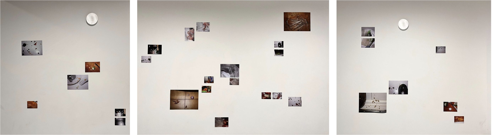
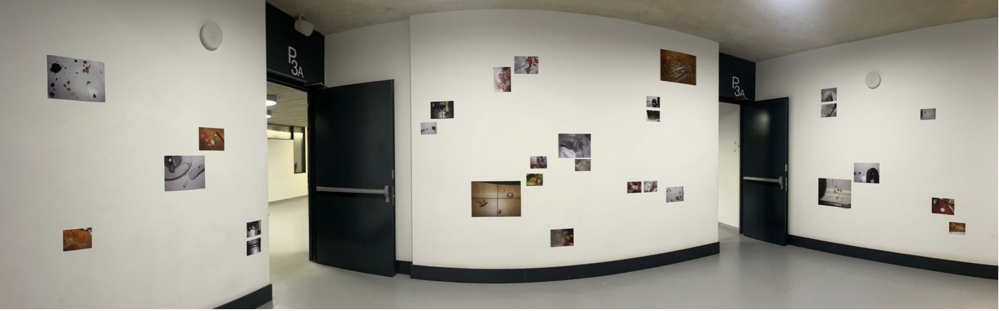
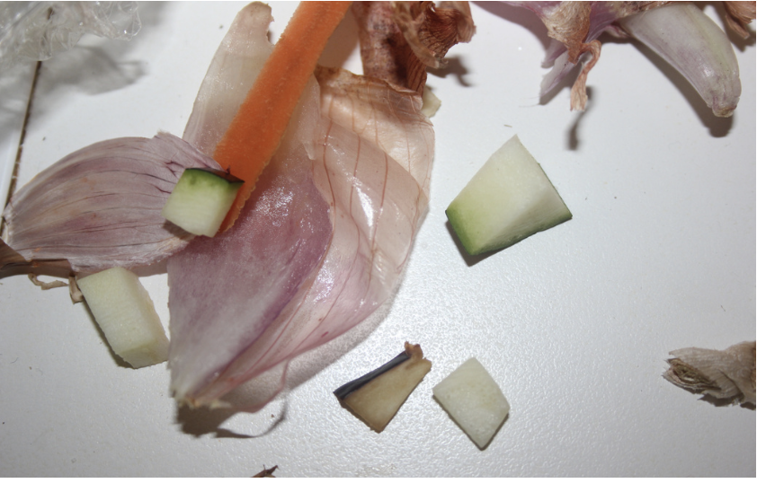
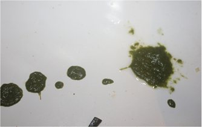
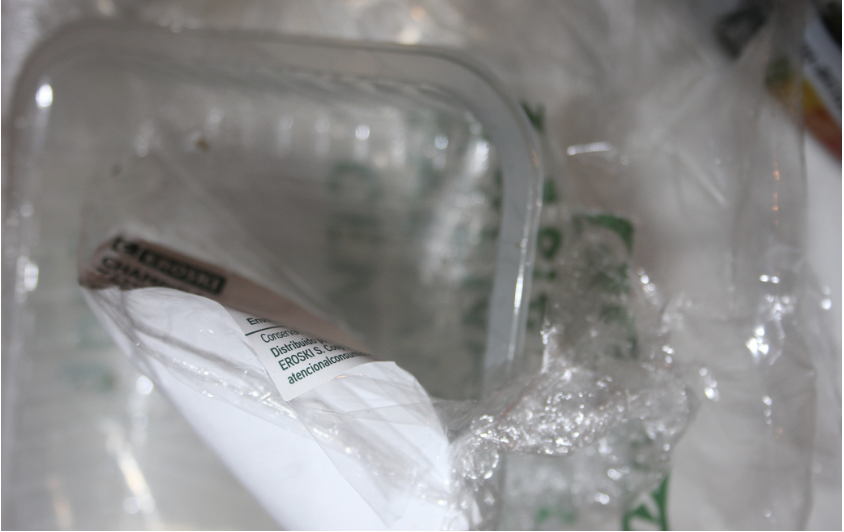
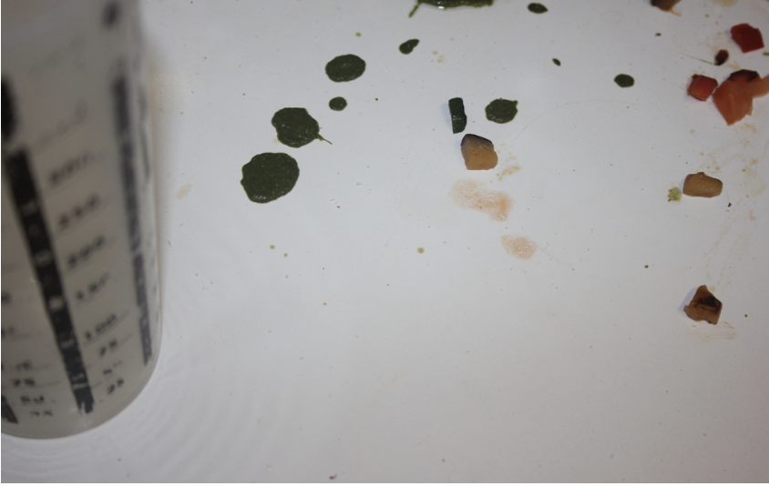
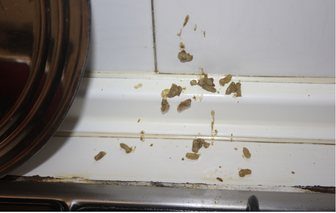
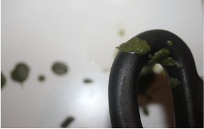

Arròs verd
per dinar.
Em costa expressar els meus sentiments amb paraules, per això trobo en la cuina una manera de demostrar estima. És un espai on puc ser lliure, sense preocupar-me pel desordre del procés, perquè el que importa és l’acte de cuidar. El projecte explora aquest procés a través de la fotografia, centrant-se en els rastres, la brutícia i el caos que deixa l’acte de cuinar, en lloc del resultat final. La proposta consisteix en una instal·lació de 29 fotografies de formats diversos, distribuïdes irregularment en tres parets d’un espai de pas. Inspirada en Wolfgang Tillmans, la disposició trasllada el desordre de la cuina a l’espai expositiu.


Arròs verd per dinar. 2025.
Instal·lació fotogràfica.
29 fotografies impreses amb làser sobre paper fotogràfic brillant de
200 g/m².
Dimensions variables.





